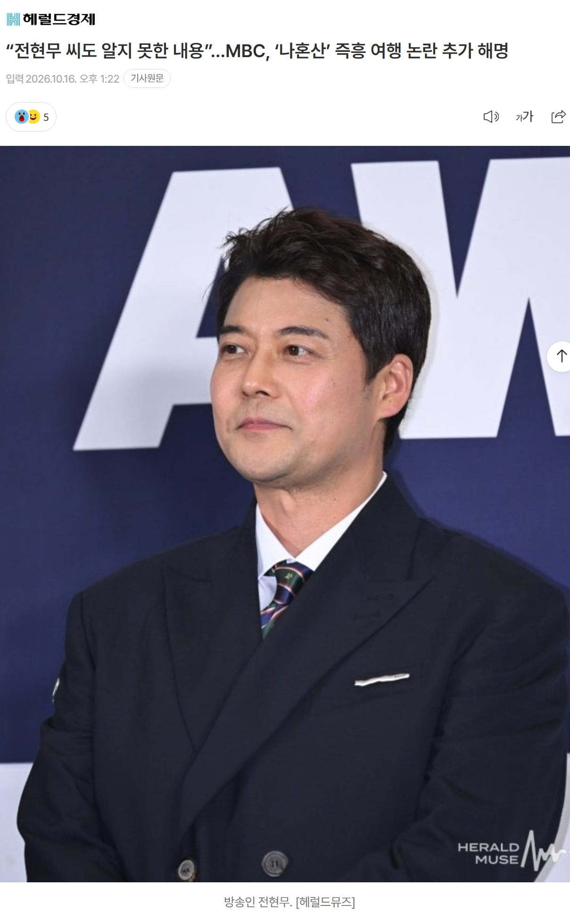
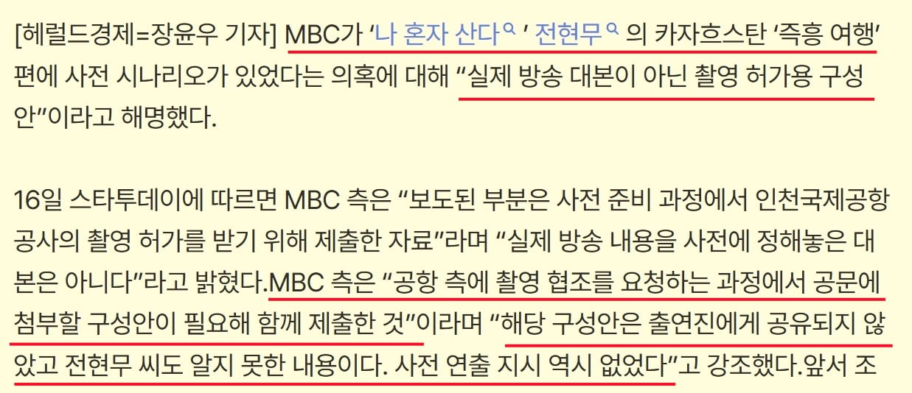

사전에 모두 준비도 하고, 대본도 있었고, 배우도 대본대로 움직였지만
아무튼 즉흥여행 이라네요~


사전에 모두 준비도 하고, 대본도 있었고, 배우도 대본대로 움직였지만
아무튼 즉흥여행 이라네요~
전현무의 즉흥여행이 컨셉인 에피소드라고 생각하변됨
이건 뭐 그냥 전현무 살리기에 애를 쓰는 걸로 보이네
물론 전현무가 딱히 잘못을 저지른 건 없어 보이고
사람들을 얼마나 바보로보면
차라리 빌게이츠가 MBC를 협박해서 전현무의 뇌에 마이크로칩을 심었다고 하는게 더 현실성 있겠네 ㅋㅋㅋㅋㅋ
현무주작 백호청룡
구성안에 의해 목적지가 정해져있었지만청룡백호현무주작이 즉흥해서 그 목적지를 찍었다!!!!!
우주의 온 기운이 나혼산을 도왔던 걸까?
아 대본도 전현무씨의 평소 습관과 성향을 분석하여 미리 만들어둔거일 뿐이라고요 억까 ㄴ